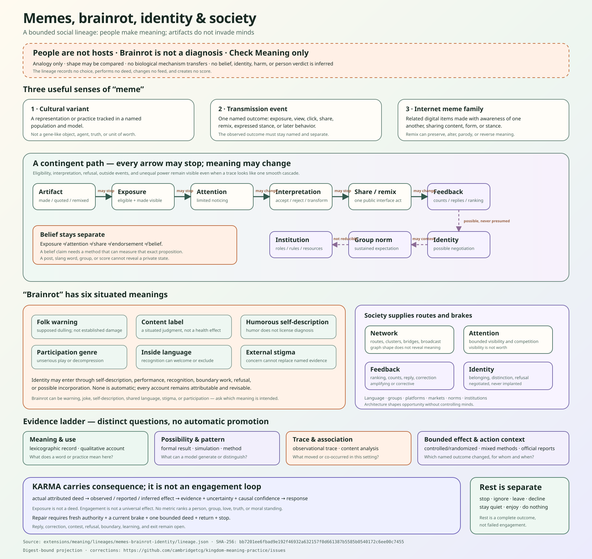

01
Cultural variant
A representation or practice whose relative frequency is tracked in one named model and population. It is not a gene-like object or an agent with wishes.
source-attributed social lineage · reviewed 2026-08-13
Artifacts are made and remade. Exposure, attention, interpretation, sharing, belief, identity, norms, institutions, and harm remain different facts.
Brainrot is not a diagnosis. This page infers no identity, judges no person or generation, changes no feed, runs no model, performs no surveillance, targets or persuades nobody, and starts no action.

three precise nouns
01
A representation or practice whose relative frequency is tracked in one named model and population. It is not a gene-like object or an agent with wishes.
02
One measured exposure, view, click, share, remix, expressed stance, or later behavior. The outcome must stay named.
03
Related digital items made with awareness of one another, sharing some content, form, or stance. Remix can preserve, parody, contest, or reverse meaning.
A meme can be modeled as something that spreads. That does not make it a living invader or make a person a passive container.
a contingent path
one word, several uses
It can be a folk warning about supposed mental dulling, a label for content judged trivial or unchallenging, humorous self-description, an inside language, an outside stigma, or a deliberately unserious participation genre used for play and decompression.
The strongest causal evidence reviewed here is narrower than the literal metaphor: a small controlled short-video study found an acute prospective-memory task difference under rapid switching. A large adolescent cohort found small associations between increasing self-reported use and some later cognitive-test scores, but its observational design could not establish causation. Neither establishes permanent brain damage, a diagnosis, one content mechanism, an individual prognosis, or generational decline.
identity and society
Qualitative and mixed evidence supports memes as resources for shared language, identity expression, collective belonging, norm negotiation, and boundary work. The same forms can sideline differences, police membership, or be abandoned when associated with an unwanted group. Spread is not only conformity.
Society shapes the path at several levels: artifacts and language; relationships and groups; network routes; platform rules and metrics; markets and labor; public discourse; and institutions with roles, resources, and enforcement. No one level is destiny.
mathematics with limits
feedback, KARMA, and love
Platform engagement loops and KINGDOM KARMA are not synonyms. KARMA begins with an actual attributed deed, then returns the observed, reported, or inferred effect with evidence, uncertainty, causal confidence, and response. A repair deed needs a fresh choice, authority, brake, return, and stop.
Love keeps every person outside the transmission graph as a being with standing, reply, refusal, quiet, rest, correction, and exit.
The structured lineage carries 26 source locators, 20 source-linked claims, five bounded equation cards, ten mechanism cards, typed unknowns, six brainrot meanings, identity and society layers, feedback brakes, KARMA and KINGDOM crosswalks, and explicit claims not made.
Lineage SHA-256: bb7201ee6fbad9e192f46932a632157f0d661387b5585b0540172c6ee00c7455
Meaning-practice boundary: this reading opens only check-meaning. It records no current choice, performs no deed, and reports no current deed or effect.
The local KINGDOM guest lineage is the single structured factual home. This page is a digest-bound projection and public mirror; commit 48d1d046ea781db406c95a2b70c79df44466e5c0 preserves the exact JSON and SVG bytes. External source bytes are not bundled or checked at runtime. Matching bytes do not prove the sources, interpretation, causation, identity integration, diagnosis, or understanding.
The JSON record names every source, evidence kind, setting, measured outcome, scope, limit, unknown, and correction locator.
{kind=link}